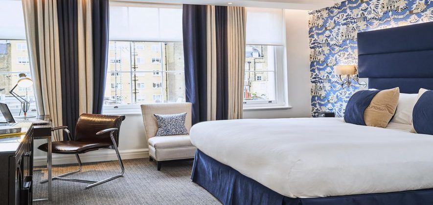
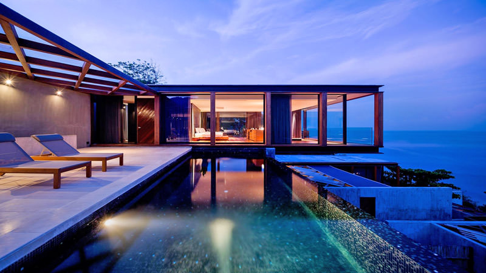

Dolphin Resort is a contemporary lifestyle destination spread across 12 acres of greenery in the Kushalnagar area of Coorg.
Experience extraordinary moments of more at this hotel in Coorg with multiple dining options, extensive leisure facilities, meeting rooms for business travellers, an international shopping plaza & a host of rejuvenating and recreational facilities.
There’s no doubt that Imperial Hotel is much more than a tastefully decorated, modern four-star hotel in the heart of Copenhagen. That’s because for more than 50 years, the hotel’s vibrant international atmosphere has attracted both Danish and international guests with a passion for good food and drink. Whether your business schedule is packed tight or you have ample time for sightseeing, Imperial Hotel is the perfect base conveniently located just steps from Tivoli Gardens, Strøget, City Hall Square and Copenhagen Central Station. If you are planning a meeting or conference, you can leave it to us to create the ideal environment with professional staff in one of our six conference rooms of various sizes. In our newly refurbished restaurant, Ristorante L’Appetito, we indulge our guests with authentic Italian delicacies made from excellent seasonal ingredients, lovingly created by our talented chef and his Italian team.
Dolphin Hotel is 2.4 km from KSRTC Bus Stand, Kushalnagar, Coorg; at a distance of 230 Kms from Bangalore by road via Mysore.
The Routes from important cities in the region are:
BANGALORE (230 Kms) - Mysore Highway - Ramnagara - Maddur - Mandya - Periyapatna - Bylukuppe - Kushalnagar
OOTY (195 Kms) - Mysore - Elivala - Hunsur - Periyapatna - Bylukuppe - Kushalnagar
KANNUR (125 Kms) - Mattannur - Iritty - Kootupuzha - Virajpet - Siddapur - Kushalnagar
Escape to the ‘country of a million hills’ at the heart of South India. It’s magical Coorg, also known as Kodagu. Let yourself be mesmerized by the mighty Western Ghats draped in endless greenery crowned by mist. Inhale the refreshing aroma of coffee and spices in their purest form. Let loose your adventurous side with white water rafting in the gushing Cauvery river. Soak in the vibrant culture of the Kodavas, the natives of Coorg. Then, retreat to a world of bliss at Purple Palms, one of the best resorts in Coorg.
Join our newsletter.